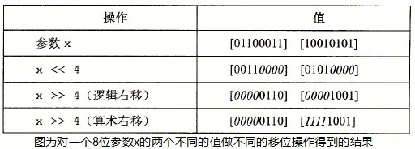

Computer System
Table of Contents
Computer System note.
<!– more –>
Computer System
内存管理
Computer Systems: A Programmer's Perspective
程序结构和执行
信息的表示和处理
整数
该部分用到的一些记号说明如下：


有符号数和无符号数之间的转换
// 有符号数和无符号数之间的转换 //// 强制类型转换的结果保持位值不变，只是改变了解释这些位的方式。 short int v=-12345; unsigned short uv = (unsigned short) v; printf("v = %d, uv = %u\n", v, uv); // v = -12345, uv = 53191; // 扩展一个数字 short sx = -12345; // -12345 unsigned short usx = sx; // 53191 int x = sx; // -12345 unsigned ux = usx; // 53191 // 截断数字 int x = 53191; short sx = (short) x; // -12345 int y = sx; // -12345
移位运算
对于一个位表示为[X(w-1), X(w-2), ···, X(0)]的操作数 x：
左移操作：C 语言表达式 x<<k 会生成一个值，其位表示为[X(w-k-1), X(w-k-2), ···, X(0), 0, ···, 0]
逻辑右移操作：逻辑右移在左端补 k 个 0，结果为[X(w-k-1), X(w-k-2), ···, X(0), 0, ···, 0]
算术右移操作：算术右移在左端补 k 个最高有效位的值，结果为[X(w-1), X(w-1), ···, X(w-1), X(w-2), ···, X(k)]

整数的运算
上图展示了加减运算，即加减运算产生的溢出

上图展示了乘法运算

上图展示了除法运算
加法、减法、位级运算和移位只需要 1 个时钟周期
乘法指令在比较老的 CPU 上需要 10 个或者更多时钟周期(Intel Core i7 Haswell 上需要 3 个时钟周期)
除法指令在比较老的 CPU 上需要 30 个或者更多时钟周期.
可以将乘法转化为加法、减法、移位的组合，例如：
14 = 2^3 + 2^2 + 2^1 所以 x*14=(x<<3)+(x<<2)+(x<<1)
14 = 2^4 - 2^1 所以 x*14=(x<<4)-(x<<1)
任何一个整数都可以表示为 2 的幂次之和，所以乘法都可以转化为位移和加法操作。但是只有当乘法转化为少量的移位、加法和减法时，编译器才会执行这种转化，从而优化性能。
当一个整数为 2 的幂次时，可以将除该整数转化为位移操作。而整数不为 2 的幂次时，则无法像乘法那样转化为位移操作了。
浮点数
浮点数表示
下图展示了 IEEE 浮点数表示的规则：
下图展示了 8 位浮点数表示的示例：

下图展示了 32 位浮点数表示的示例：

浮点数表示的连续性，可以将浮点数的表示有一种更直观的理解：
e 间隔 1 的数落在[2^e, 2^(e+1)) 范围内，并且这个范围内，任意两个相邻的浮点数的间隔为 2^(e-23) (以 float 为例)
- 浮点数象形表示法 https://zhuanlan.zhihu.com/p/138845520
- Floating Point Visually Explained https://fabiensanglard.net/floating_point_visually_explained/index.html
舍入
舍入的一个关键问题是在两个可能值的中间如何确定舍入方向。IEEE 浮点格式定义了四种不同的舍入方式。
| 方式 | 1.40 美元 | 1.60 美元 | 1.50 美元 | 2.50 美元 | -1.50 美元 |
|---|---|---|---|---|---|
| 向偶数舍入 | 1 | 2 | 2 | 2 | -2 |
| 向零舍入 | 1 | 1 | 1 | 2 | -1 |
| 向下舍入 | 1 | 1 | 1 | 2 | -2 |
| 向上舍入 | 2 | 2 | 2 | 3 | -1 |
向偶数舍入也被称为向最接近的值舍入，其为默认的方式。给定值为两个可能值的中间值时，向偶数舍入将数字向上或者向下舍入，使得结果的最低有效数字为偶数。（例如：上面向偶数舍入将 1.5 和 2.5 都舍入为 2）
向偶数舍入应用于二进制数时，最低有效位的值为 0 认为是偶数，值为 1 认为是奇数。只有对于形如 XX···X.YY···Y1000 的二进制位模式的数，这种舍入方式才有效，其中 X 和 Y 表示任意位值，最右边 Y 是要被舍入的位置。
浮点数运算
- 浮点数算术运算

下图展示了，浮点数加法运算时，舍入所导致的误差范围：
下图展示了，从浮点运算导出的一些结论：
- Error Propagation
下图展示了 Forward Error Analysis 和 Backword Error Analysis:

下图展示了对浮点计算误差的分析和定界：

- Running Error Analysis
除了通过代数的方法来得出误差范围，也可以让计算机为我们做这项工作，这种方式被称为 running error analysis.其背后的理念是，每次执行浮点运算时，同时计算累积到当前计算的误差范围。
- Misc
v>0 v/0 = Infinity
v<0 v/0 = -Infinity
v>0 v*Infinity = Infinity
v<0 v*Infinity = -Infinity
0*infinity = NaN
Infinity - Infinity = NaN
Infinity + Infinity = Infinity
NaN + v = NaN
NaN 和任意数字的比较都为 false
- 浮点数加法是可交换的。
- 浮点数加法不具有结合性（因为舍入或溢出）。
(3.14+1e10)-1e10 = 0
3.14+(1e10-1e10) = 3.14
1e10 是 C/C++规定的浮点数的科学计数写法,意思是 1.0x10 的 10 次方 - 浮点数加法满足单调性属性：如果 a>=b,那么对于任何 a、b 以及 x 的值，除了 NaN，都有 x+a>=x+b。
- 浮点数乘法是可交换的。
- 浮点数乘法不具有结合性（因为舍入或溢出）。
(1e20*1e20)*1e-20 为无穷大
1e20*(1e20*1e-20) 为 1e20 - 浮点乘法在加法上不具备分配性。
1e20*(1e20-1e20) = 0
1e20*1e-20-1e20*1e-20 = NaN - 浮点乘法满足下列单调性：对于任何 a、b、c,并且 a、b、c 都不为 NaN,浮点乘法满足
a>=b 且 c>=0 则 a*c>=b*c
a>=b 且 c<=0 则 a*c<=b*c
无符号或补码的乘法没有这些单调性属性，因为溢出时会取模。
- 浮点数加法是可交换的。
- Tips
本节内容部分来自 Physically Based Rendering_v3_en 3.9 节 Managing Rounding Error.